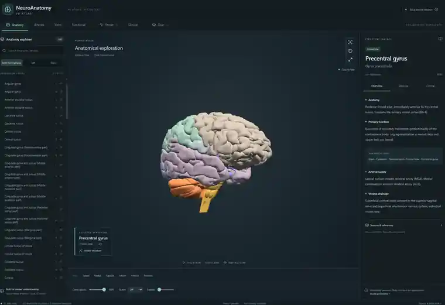

2026 · In development
NeuroAnatomy
An intelligent interactive 3D atlas built for academic and medical education.


Learning workflow
The interface is organised around a selected anatomical structure, then connects that structure to the information needed to understand it in context.
Select structure→3D localisation→Function→Vascular anatomy→Clinical context
Built for understanding
Users can browse and isolate anatomical structures, switch between hemispheres and layers, and connect the selected 3D structure with academic context in the information panel.
Neurovascular context
The atlas includes dedicated arterial and venous exploration so anatomy and circulation can be studied in the same spatial context.
Educational positioning
The project is intended for academic and educational use. It is not presented as a clinical diagnostic tool.